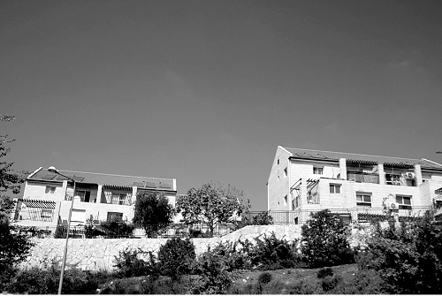

Zero Hour for the Young Settlements
Grassroots protests at intersections around the country can and will produce powerful results, thereby initiating a real battle to put a halt to the current wave of destruction.
Translated by Michoel Leib Dobry

The moment of truth has arrived. The lengthy discussions over the past six months, including endless debate on subjects such as ‘Givat HaUlpana’ and ‘Migron’ have reached their conclusion. Thus, it seems that the forces of ruin are now vigorously preparing for the next act of destruction.
The prime minister has brought the left-center Kadima Party into his government, creating an “all-inclusive” potpourri where the right-of-center parties are clearly outnumbered. As a result, he is no longer worried what the more ideological Likud Knesset Members have to say. They’ve already lost the ability to threaten him with toppling the coalition if he dares to send the tractors out to dismantle more settlements. The government now enjoys wide parliamentary support, and the prime minister apparently now feels so sure of himself that he can set out on his destructive policies virtually unimpeded. He promised action to his coalition partners, who have demanded the use of greater force against the settlers in order to justify to their voters why they joined the government.
Behind the scenes, the defense minister is instigating a direct clash with the settlement leaders. He still clings to the old principle of “hit the settlers and save your skin.” His hope is to restore a sense of political relevance among his core supporters, built upon new pictures of injured settlers and demolished homes.
Now is the time for us to head into the real battle. With the political establishment silenced and the prime minister feeling relatively secure, only the people can change the situation. We must go back to the original method for bringing about change – public protest.
In this global technological age, every move we make can have a reverberating effect. It’s enough if every Chabad Chassid gathers four friends and they go out together to the nearest intersection with placards calling for the prime minister to stop demolishing settlements, thereby creating greater publicity in the media and renewing the protest campaign. When Chabadnikim stand at the junction near Beitar Illit, they encourage their colleagues in Kiryat Gat to do the same, and they subsequently encourage other Chassidim to take action.
As the situation gets more serious and the general public remains in a state of deep hibernation, we simply can’t wait until the major organizations get tens of thousands of people out into the city squares. The protest demonstrations at intersections and other such activities are the strongest weapon the people have to prevent the government’s next act of recklessness.
Of course, we just can’t settle for small protests. We have to remember the call of the Rebbe, Melech HaMoshiach, who said that “every protest helps.” The Rebbe also said that he knows how the higher echelons of government policymakers take note of these protests, even when we sometimes think that they achieve nothing.
FOREIGNERS IN OUR MIDST
A few weeks ago, we once again confronted the problem of the Sudanese refugees creeping past our southern border and flooding into Eretz Yisroel. With yet another wave of rampant violence against the residents of south Tel Aviv, we were reminded how the first city of the Jewish homeland is gradually turning into the last city of Sudan.
Those who today are fighting on behalf of these refugees and assisting their entry into the country are the same people who were screaming seven years ago that we have to uproot the Jewish settlements in Gush Katif and the northern Shomron in order to solve the demographic problem. They used this claim in order to influence public opinion, telling us that the question was whether we were prepared to make painful concessions to preserve the Jewish majority within the Green Line. These are also the same people who told us for thirty years that there is a marvelous peace with Egypt, and our neighborly relations with them would never cause us harm. It’s interesting to consider whether all these refugees could have entered the country through Syria as well, or whether the “peace” with Egypt was the very thing that allowed the Sudanese to flood into the Holy Land.
In the past several years, the foreign refugee problem has become one of the most serious threats to the Jewish majority in Eretz Yisroel. They infiltrate the country, or receive work permits, and then settle here. They’re not war refugees as some try to portray them. They’re people who escaped long ago from a combat zone and came here via Egypt, where they were booted out in a fashion far different than we would ever do.
All of those noble-minded souls who try to paint such a rosy picture to the world seem to forget the Divine right of the Jewish People to the Holy Land. Instead, they relate to the issue of equal rights, potentially turning Eretz Yisroel into a multinational country. It would seem that the next generation of Knesset Members will include a sizable faction representing “the Sudanese minority,” demanding the privileges of citizenship under the law. It doesn’t appear to bother these enlightened free-thinkers that the Sudanese have brought violence and crime to the streets of Eretz HaKodesh, along with a Christian culture, the establishment of churches and other houses of worship in Tel Aviv, all of which eat away at the city’s Jewish character.
To counter the efforts of these high-minded liberals, we must come out openly and reinforce a sense of Jewish awareness among the residents of Eretz Yisroel. The overall population must be strong enough to deal with this new demographic threat, and it must be instilled with Jewish faith and the understanding of what Eretz HaKodesh is and why it belongs to the Jewish People.
There is a clear connection between the struggle to ensure the territorial integrity of Eretz Yisroel and the struggle to preserve its Jewish nature. Those who argue that we are not allowed to settle in Yehuda and Shomron are the same ones who state that it’s permissible for emigrant workers to settle in Tel Aviv. They claim that the establishment of new footholds on Arab land is positively infuriating, while they openly encourage Sudanese incursion into areas within Israel proper. How ironic; how duplicitous.
RETURNING TO OUR POINT OF ORIGIN
Last month, in commemoration of the forty-fifth anniversary of the liberation and unification of Yerushalayim, a campaign was organized against the “Peace Now” movement’s activities on behalf of the city’s division. It reminded the “Peace Now” membership that once – about forty years ago – they had sworn allegiance to Yerushalayim, declaring that it was the indivisible capital of the Jewish state. This declaration proudly appears in the movement’s official principles.
It’s hard to understand what has happened to the Israeli public over the years since the moving proclamation of “The Temple Mount is in our hands.” What is clear is that something has breached the wall of faith in our right to Eretz Yisroel. People used to walk with tremendous self-esteem because we had defeated our Arab enemies and conquered the territories. They called it “liberation.” It was perfectly obvious to every normal Israeli that these territories are ours. The intense longing to touch the holy stones of the Western Wall and walk through the annals of Jewish history was a quite natural feeling among the entire population, regardless of differing political or religious ideologies.
It seems that more than anything else, this breach of faith was caused by the varying Israeli explanations over the years regarding our presence in Eretz Yisroel. Instead of adhering firmly to the position that this is the land of the Jewish People, its everlasting homeland, and how every Jew’s heart swells with pride over its liberation, the Israeli leadership has sought to hide behind the flimsy claims of “democracy,” about how “they started it”… Today, it is all too apparent where these claims have brought us and how it has damaged our Jewish national honor and self-dignity.
Yet, despite this deteriorating state of affairs, we must not give up hope. We can change the face of history, it we would only remain true to the guidelines set by the Rebbe, Melech HaMoshiach. We must expand Jewish awareness of our claim to Eretz Yisroel, connecting the People of Israel to its true eternal values. If the brainwashing tactics of the extreme left-wing organizations could manage to sway Israeli public opinion and bring us to this dangerous situation, it’s clear that a rational approach based on the principles held by every faithful Jew will be accepted with far greater ease. With G-d’s help, we will do and we will succeed.
Sholom Ber Crombie. "Zero Hour for the Young Settlements." Beis Moshiach, no. 836 (June 6, 2012).